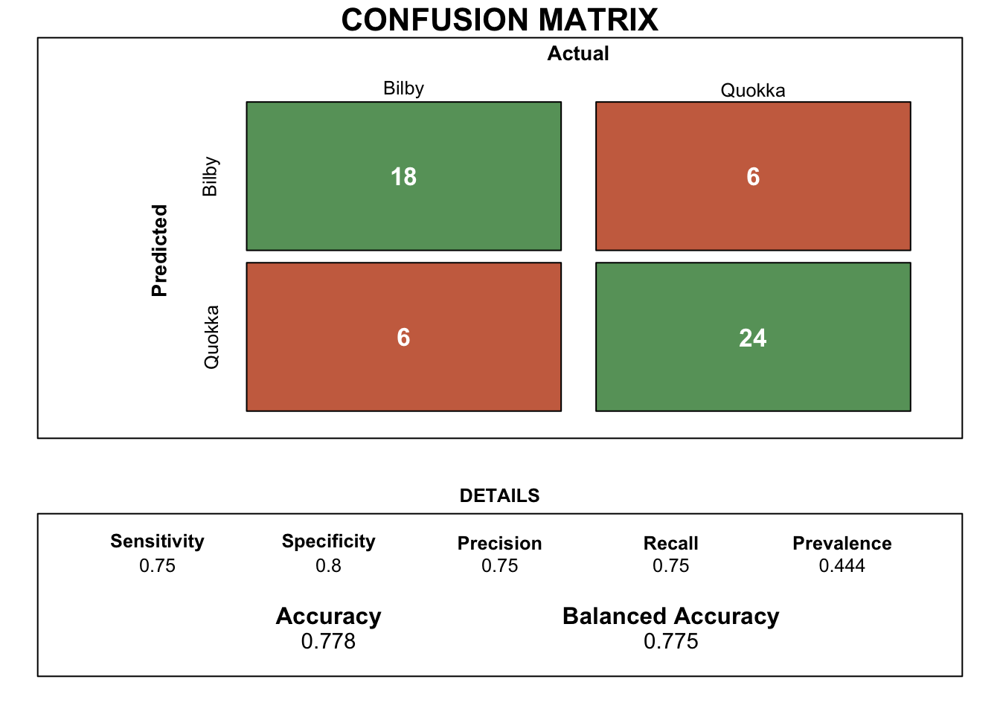
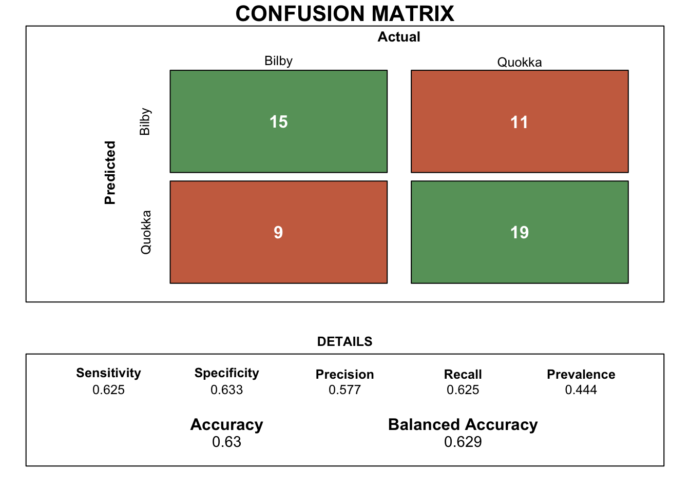
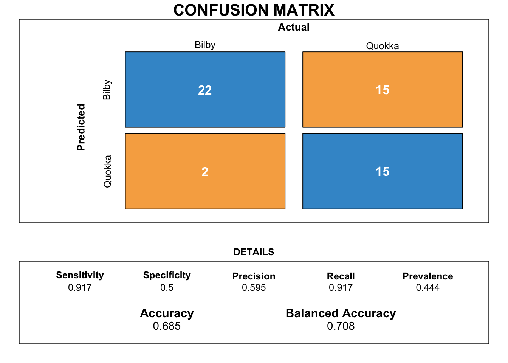
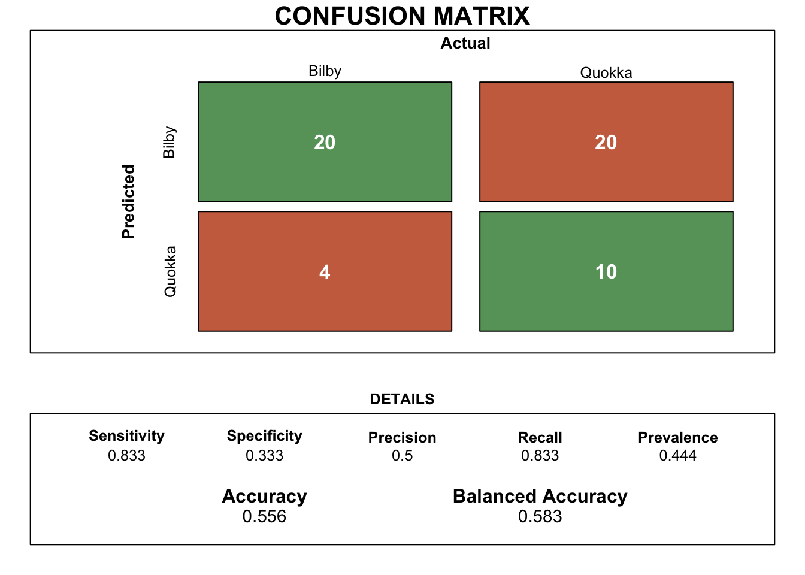

S <- rbind(c(3,1),c(1,2))
X <- rbind(4,2)
A <- rbind(1,-1)
Matrix_calculation <- t(X-A) %*% solve(S) %*% (X-A)ETC3250/5250 Assignment 1
Exercises
1. Basic math and computing
The matrix calculation for computing \((X-A)^T S^{-1}(X-A)\) yields the result 5.4.
2. ML concepts
a) Model accuracy
| y | pred1 | pred2 | bilby1 | bilby2 | quokka1 | quokka2 |
|---|---|---|---|---|---|---|
| bilby | bilby | bilby | 0.8 | 0.80 | 0.2 | 0.20 |
| bilby | bilby | bilby | 0.9 | 0.51 | 0.1 | 0.49 |
| bilby | bilby | bilby | 0.9 | 0.60 | 0.1 | 0.40 |
Model 1
The accuracy for model 1 which is calculated based on the number of true positives and the true negatives is observed to be 0.778.
However, the accuracy parameter for a model may not always be the best indicator. This is especially true when the data may contain unbalanced class distribution. In this case, we will rely on balanced accuracy which is based on the true positive and the true negative rate of prediction for the model.
The balanced accuracy for model 1 is found to be 0.775.
Figure 1 illustrates the detailed confusion matrix for model 1 with the critical model parameters which are useful indicators of model performance.

Model 2
The accuracy for model 2 which is calculated based on the number of true positives and the true negatives is observed to be 0.63. The balanced accuracy for the same model which is based on the true positive and the true negative rates are 0.629.
Figure 2 illustrates the detailed confusion matrix for model 2.

b) Sensitivity and Specificity with revised threshold values
1) When the threshold value for classification in model 1 is 0.3
The sensitivity for model 1 when the threshold value for positive Bilby classification is 0.3 and above is 0.958. The value for 1-Specificity for the same model which is based on the true positive and the true negative rates is 0.767.
2) When the threshold value for classification in model 1 is 0.4

3) When the threshold value for classification in model 2 is 0.3
The sensitivity for model 1 when the threshold value for positive Bilby classification is 0.3 and above is 0.958. The value for 1-Specificity for the same model which is based on the true positive and the true negative rates is 0.767.

4) When the threshold value for classification in model 2 is 0.4
3. Visualisation (8pts)
YOUR ANSWER HERE
4. Dimension reduction (15pts)
YOUR ANSWER HERE
References
Hadley Wickham, Dianne Cook, Heike Hofmann, Andreas Buja (2011). tourr: An R Package for Exploring Multivariate Data with Projections. Journal of Statistical Software, 40(2), 1-18. URL http://www.jstatsoft.org/v40/i02/.
Kuhn et al., (2020). Tidymodels: a collection of packages for modeling and machine learning using tidyverse principles. https://www.tidymodels.org
OpenAI (2023). ChatGPT (version 3.5) [Large language model]. https://chat.openai.com/chat, full script of conversation here